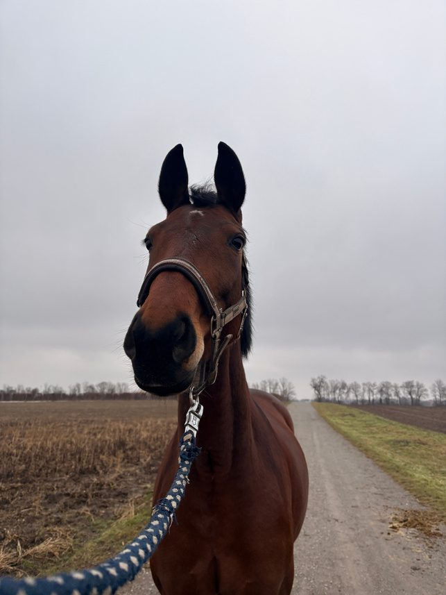
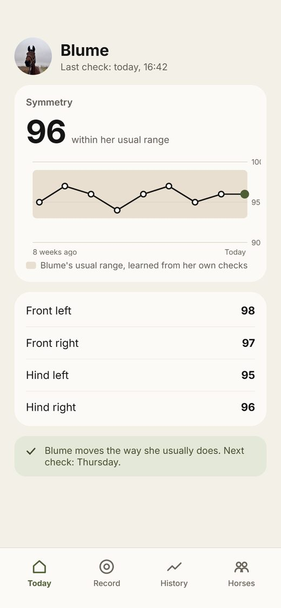
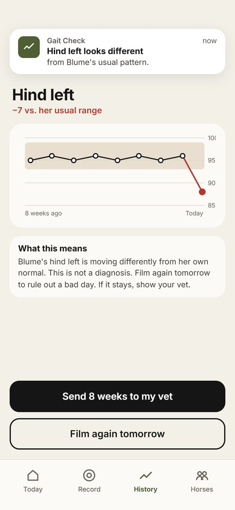
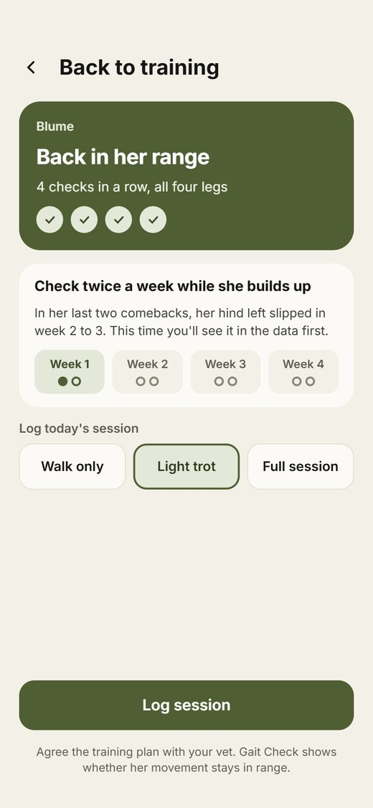
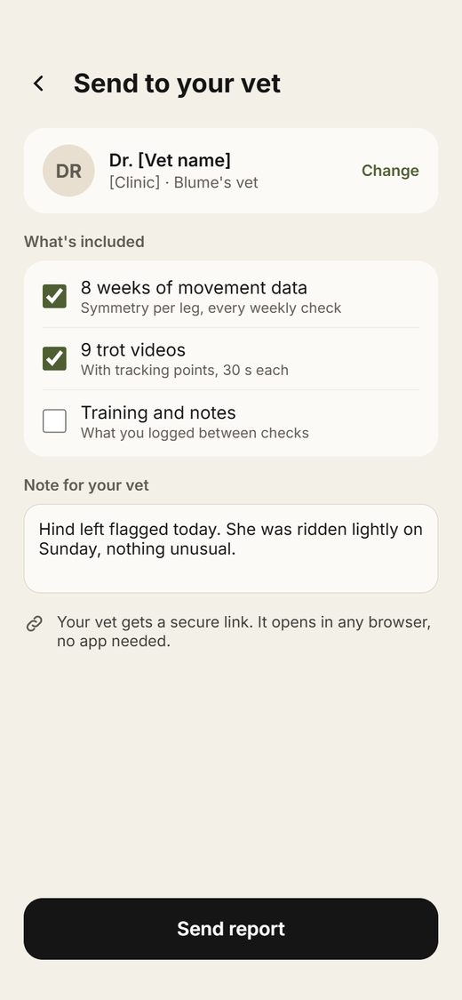

1Film
30 seconds of trot
In hand, away from you and back, on straight firm ground. Like the trot-up at the vet.
Film a 30-second trot once a week. Gait Check learns how your horse normally moves and tells you when a leg starts moving differently – before anyone can see it.

Tap the phone to open the live demo. This is the real demo – click around.
Horses are prey animals and hide pain by instinct. Lameness often starts as a few millimetres of difference between steps. By the time you can see it, a short break has turned into months off.
If you see your horse every day, you get used to gradual changes.
In rehab, “she looks okay” is a gut feeling. Too early means a relapse.
One trot-up on one day, without knowing what's normal for this horse.

A tendon injury in her left hind leg has kept her lame for more than a year.
“I can't prevent horses from going lame. No one can. But you can catch it earlier, act earlier and shorten the time off.”Aurelia, founder, rider for 13 years
Three steps, once a week.
In hand, away from you and back, on straight firm ground. Like the trot-up at the vet.

The app tracks hooves, joints and hips and learns the normal range of each leg.

Film again the next day, or send the history to your vet.
Every horse has a stiff side and a hollow side, so a textbook ideal would raise false alarms all the time. Gait Check compares each horse only with itself: four checks set its normal range, every later check is measured against it.
It is built for the earliest stage, the one vets grade 1 to 2 out of 5: hard to see, not always there, and still early enough for a short break.
See the baseline in the demoThe hardest question after lameness is “when can we train again?”. Gait Check shows when your horse has been back in its own range for several checks in a row, on all four legs.
Agree the training plan with your vet.

Owners send a secure link: symmetry per leg for every check, the trot videos with tracking points, and their notes. It opens in any browser, with no app and no account.

Yes, because it measures instead of looking. Gait Check uses markerless pose estimation: a neural network finds the same points on your horse in every video frame – head, withers, pelvis, hooves – with no stickers and no sensors. From how those points rise and fall over many trot strides, it calculates how evenly the left and right half of each stride match. Your eye judges one stride at a time, in real time. The app compares dozens, frame by frame. Peer-reviewed research has shown that markerless phone video can measure trot asymmetry close to multi-camera motion capture. Our own model is in development and has to prove itself against such systems before launch.
No, but it changes what you get. If you start with a lame horse, its baseline is its current movement, so Gait Check can't alert you to a problem that is already there. You still see the left–right symmetry of every leg from the first check, and a clearly uneven result is worth showing your vet. From then on you follow the trend: better, stable or slipping back. That is exactly the question in rehab.
No, and it isn't meant to be. Gait Check detects and documents changes in how your horse moves. It doesn't say what causes them. That is a legal line and a sensible one: a diagnosis needs a vet's hands, eyes and experience. Owners record. Vets decide.
Planned pricing at launch: €19.99 a month, or €199.99 if you pay for the year in one go. That is about €40 less, roughly two months free. Stables and trainers with several horses pay €99 a month.
Today, one tap sends your own vet a secure link with the full history: symmetry per leg, the trot videos and your notes. Planned for later: a video call with a vet or an equine specialist directly in the app, so you can talk a change through without waiting for the next visit.
Works best on your phone. Add it to your home screen.